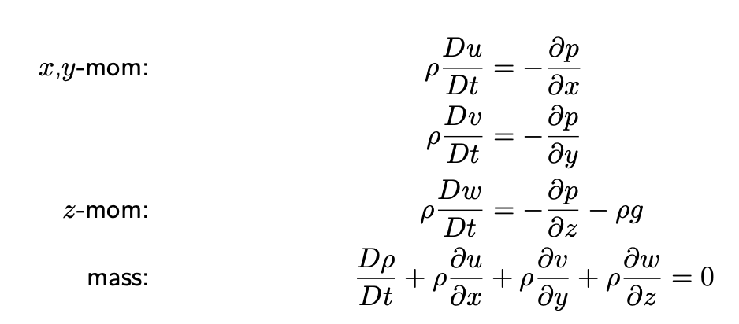
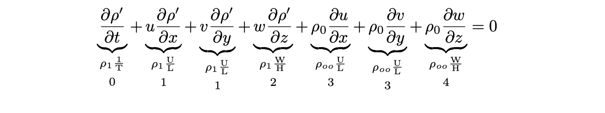

\(\newcommand{\pfrac}[2]{\frac{\partial #1}{\partial #2}}\)
\(\newcommand{\sW}{\mathrm{W}}\) \(\newcommand{\sH}{\mathrm{H}}\) \(\newcommand{\sU}{\mathrm{U}}\) \(\newcommand{\sL}{\mathrm{L}}\) \(\newcommand{\sT}{\mathrm{T}}\)
Hydrostatic approximation#
This is a demonstration of using scaling analysis to hydrostatic balance. It will not be assessed in 63-716/63-717 RegOz.
How we’ll do this:
We start with some equations of motion.
Use scaling analysis to discard less important terms. Use the remaining terms to determine relationships between the individual scales. (This is like solving equations, but very inexactly!)
When necessary, impose relationships between individual scales in order to further simplify those equations. Keep track of relationships imposed as the assumptions or conditions under which the final simplified balance is valid.
1. Start with the equations of motion.
Start from the non-rotating (\(f=0\)), inviscid (frictionless \((F_x,F_y,F_z)=0\)) equations of motion where we’ve multiplied through by \(\rho\):

Apply the Boussinesq approximation, that \(\rho = \rho_0+\rho'(x,y,z,t)\), with \(\rho_0\) constant.
2. Scaling the mass equation.
Expanding the mass equation, we get:
\begin{align*} \frac{1}{\rho}\frac{D\rho}{Dt} + \nabla\cdot\vec{u} &= 0\ \frac{D\rho}{Dt} +\rho \left(\pfrac{u}{x}+\pfrac{v}{y}+\pfrac{w}{z}\right) &= 0\ \pfrac{\rho}{t} + u\pfrac{\rho}{x} + v\pfrac{\rho}{y} + w\pfrac{\rho}{z} + \rho\pfrac{u}{x}+\rho\pfrac{v}{y} + \rho\pfrac{w}{z} & =0 \end{align*}
Because we have that \(\rho=\rho_0+\rho'\), we need to substitute it into the equation everywhere. However, using \(\rho_0\) constant, allows it to drop from the \(D\rho/Dt\) term. This is because the derivative of a constant is identically (exactly) zero. So
\begin{align*} \pfrac{}{t}(\rho)&=\pfrac{}{t}(\rho_0+\rho’)\ &=\pfrac{\rho_0}{t}+\pfrac{\rho’}{t}\ &=0+\pfrac{\rho’}{t} \end{align*}
Then our equation becomes
Now, in the latter three terms, we are multiplying by \(\rho_0+\rho'\), but \(\rho_0\gg\rho'\), so
since anything multiplied by \(\rho'\) is much smaller than the same thing multiplied by \(\rho_0\). Cancelling out the terms which are multiplied by \(\rho'\), we are left with

We will apply an assumption called the advective timescale assumption to give us that the scale of the \(\partial\rho/\partial t\) term is the same as the \(u\partial\rho/\partial x\). This assumption says that the timescale \(\sT\) associated with the \(\partial/\partial t\) in the equation is set by the speed \(\sU\) and distance \(\sL\) under consideration. Since rate times time equals distance, then $\(\sU\sT=\sL\qquad\mbox{ or }\qquad\sT=\sL/\sU\)$
Applying this to our equation, this shows us that term 0 has the same scale as term 1. Then comparing terms 1 and 3, and 2 and 4, we find that \(1\ll3\) and \(2\ll4\) since \(\rho_1\ll\rho_{oo}\).
So we are left with retaining terms 3 and 4 which gives us the “incompressibility” equation \begin{align*} \underbrace{\pfrac{u}{x}}_3+\underbrace{\pfrac{v}{y}}_3 + \underbrace{\pfrac{w}{z}}_4 & =0 \end{align*} We have three options for how these terms will balance:
option 1: \(3\gg 4\)
option 2: \(3\sim 4\)
option 3: \(3\ll 4\)
If option 1, then we can cancel the third term and we’re left with “horizontal non-divergence” or
If option 2, then all three terms must be retained.
If option 3, then we say term 4 is much bigger than terms 3, and cancel both terms with scale \(\sU/\sL\). But then we are left with
or, that term 4 is zero! But we arrived at this result by assuming term 4 was big, not zero. So option 3 is not possible.
Then we only have options 1 or 2, that either
\begin{align*} \frac{\sU}{\sL} &\gg\frac{\sW}{\sH} &\mbox{ or }& \qquad&\frac{\sU}{\sL} &\sim\frac{\sW}{\sH} \end{align*}
If we want them to balance (and not have 3 dominate 4, or vice versa) then we require their scales to match:
\begin{align*} \frac{\sU}{\sL} &\sim\frac{\sW}{\sH} &\Rightarrow& \qquad&\sW\sim\frac{\sU\sH}{\sL} \end{align*} which actually tells us that the material derivative (all terms in it, not just \(\partial/\partial t\)) scale like \begin{equation} \left[\frac{D}{Dt}\right] \sim \frac{\sU}{\sL} \end{equation}
Question for thought: How does this differ from the advective timescale assumption?
2. Scaling the \(x\)-momentum equation.
\(\blacklozenge\) Refer to the example problem at the end of the notes to try scaling the \(x\)-momentum equation to determine a scale for \([p']\). You should arrive at \([p'] =\rho_{oo}\sU^2\).
2. Scaling the \(z\)-momentum equation.
To scale the \(z\)-momentum equation, we’ll use four things:
The advective timescale assumption
Boussinesq approximation
And define \(\bar{p}{z}\) to satisfy the equation \(\pfrac{\bar{p}}{z}=-\rho_0g\)
The scaling we found above for \([p']\)
These will get us nearly there, but for the last step, we’ll find that if we really want the equations to simplify down to the hydrostatic approximation, we’ll need to make one more assumption. We’ll use the scaling to determine what that assumption must be. In the end, these assumptions tell us the conditions that a flow must satisfy in order for the final result (in this case, hydrostatic approximation) to be valid.
Let’s try it out\(\ldots\)
(Recalling \(\rho=\rho_0 + \rho'(x,y,z,t)\) and \(p=\bar{p}(z)+p'(x,y,z,t)\)\ldots) Then the \(z\)-momentum equation is
\begin{equation*} \rho\frac{Dw}{Dt} = \cancel{-\pfrac{\bar{p}}{z}} - \pfrac{p’}{z} - \cancel{\rho_0 g} - \rho’g\ . \end{equation*}
We can strike through the terms shown by defining \(\bar{p}(z)\) to be exactly hydrostatic pressure due to the background density \(\rho_0\),
\begin{equation*} \pfrac{\bar{p}(z)}{z} = -\rho_0g\ . \end{equation*}
This is allowed because both \(\bar{p}\) and \(p'\) vary with \(z\), and we haven’t assumed that \(p'\ll \bar{p}\). Any leftover variations of \(p\) with depth can be taken up by \(p'\).
\begin{equation*} \underbrace{\rho\frac{Dw}{Dt}}_1 = \cancel{-\pfrac{\bar{p}}{z}} - \underbrace{\pfrac{p’}{z}}_2 - \cancel{{\rho_0}g} - \underbrace{\rho’g}_3 \end{equation*}
Perform scale analysis on the remaining terms:
Then substituting in for \(\sW\sim \sU\sH/\sL\) (which we got from incompressibility above) and \([p']\sim\rho_{oo}\sU^2\) (which you can derive in the in-class examples at the end of the lecture)
\begin{align*} 1: & \rho_{oo}\frac{\sU^2\sH}{\sL^2} & 2: & \rho_{oo}\frac{\sU^2}{\sH} & 3: & [\rho’]g \end{align*}
Ok, now we have a problem. We have 3 terms left:
Vertical acceleration
Vertical pressure gradient
Gravity
It’s now time to invoke step 3!
3. Impose conditions to achieve a meaningful balance
The balance we are looking for is to be able to throw out the term on the left-hand-side. If we want that, we’ll need to find a condition that results in the scale of term 1 being much less than the scale of term 2 (leaving only term 3 to balance term 2).
Terms 1 and 2 look kind of similar, but differ by how many \(\sH\) and \(\sL\) are there. Can we use that?
Condition: If \(\sH\ll \sL\), then \(1\ll 2\).
This would allow us to drop term 1, and left with requiring terms 2 and 3 to balance: \begin{equation} \boxed{\pfrac{p’}{z} = -\rho’g}\tag{Hydrostatic approximation} \end{equation} This is the hydrostatic approximation, that even perturbations in pressure are governed by perturbations in density.
Question for thought: Did we need to make the assumption that \(\sH\ll\sL\)? In fact, if \(\sH\ll\sL\) then term 1 is much much smaller than 2. To see why, consider if \(\sH\) and \(\sL\) are one order of magnitude different, e.g. \(\sH=0.1\) and \(\sL=1\). How does \(\sH^2\) compare to \(\sL^2\)?